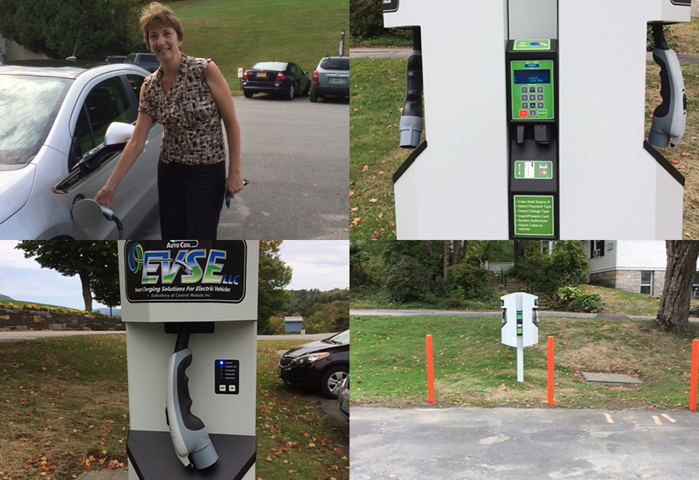
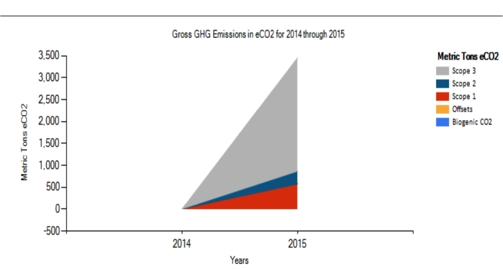

Executive Director Office of the President & Board of Trustees
The Global Advisory Council
Robert Chase:
“[The call] provided a great chance to stay current with the subject matter, but just as importantly to gain some insight into the dynamics and utility of the group to the Agency. I was impressed; there seemed to be genuine interest and commitment; moreover, it provided an opportunity for us to explain our activities and approaches to a group of potential partners, and – from the way you structured and managed the meeting - an opportunity for them to do some marketing themselves...”
Robert Chase:
“...Seeing World Learning as the hub of a network of like-minded agencies is sure to generate some practical payoffs, in addition to the other one-on-one and collective benefits you have discussed on other occasions.”
Rachel Henry
Vice President for Global Human Resources
Why do we care about employee engagement?
71% of top executives rank employee engagement as very important to achieving success
22% more productivity for highly engaged employees
Double success rate
Better health, 48% less absenteeism
30% lower turnover
Only 24% of employees are highly engaged
World Learning Results
IDEP Results
SIT Results
IDEP Results vs. Benchmark (Government/NP)
SIT Results vs. Benchmark (Education)
Lisa Rae
Senior Vice President of Legal Affairs and General Counsel
GreenUp Progress Update
Carbon Calculator =3500 Metric tons of CO2, mostly travel related.
BikeShare launched October 1 – Goal to increase transportation (and fitness) options for students while decreasing reliance on gas-powered vehicles.
Electric vehicle charger installed. Currently pay-for-use.
LED exterior and interior lighting and Low-flow shower heads.
Awarded an Efficiency Vermont incentive grant of $8,330.

Calculator Data

What’s next: Climate Commitment
GreenUp Group meets regularly
Current Students have interest in Community Garden, and food systems/recovery issues; wasteLESS week in late October
Fund exists and requires donations and/or Board-designated funds per October 2014 Climate Commitment
Now that Calculator is completed, focus returns to drafting Action Plan for Carbon Neutrality
What’s Next: Toward Carbon Neutrality
SIT Solar Energy
MOU signed for Off-taking on a 500 kW Array off-site
Campus Energy Audit with Dynamic Organics – By early January


 (1).jpg)
.JPG)